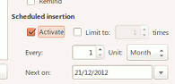
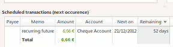

The scheduled transaction feature allows you to manage the insertion of transactions automatically before or at their due date.
Open the Scheduled/Template dialog from either the mainwindow menu or the toolbar.
Select an existing transaction, or create a new one
Into the main window, you can see the next occurrence of each scheduled transactions status from their last insertion. This list gives you an overview of what is pending with the next occurrence date and the remaining days.

The remaining day count is negative if the transaction insertion is overdue.
With the default preferences, the transactions will be automatically inserted at their due date every time you open your HomeBank file.
You can change this behavior from the file properties dialog with 2 options:
To insert transaction to their due date again, insert 0 days in advance the current date. You can also reach this configuration dialog from the mainwindow menu Transaction/Set scheduler...
The insertion at start can be changed from the preferences dialog
At last, you are able to trigger the insertion from the mainwindow menu Transaction/Process scheduled...